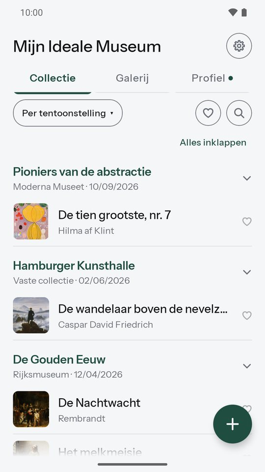
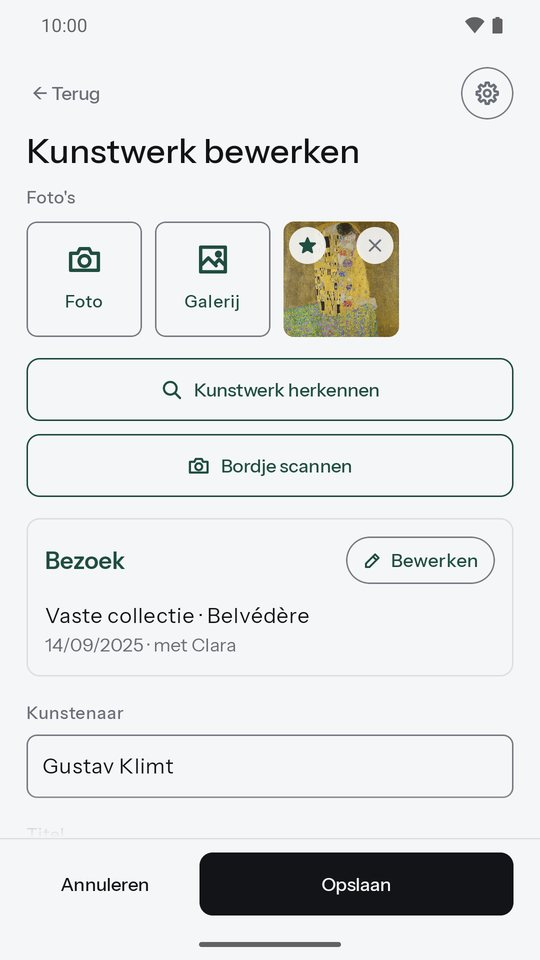
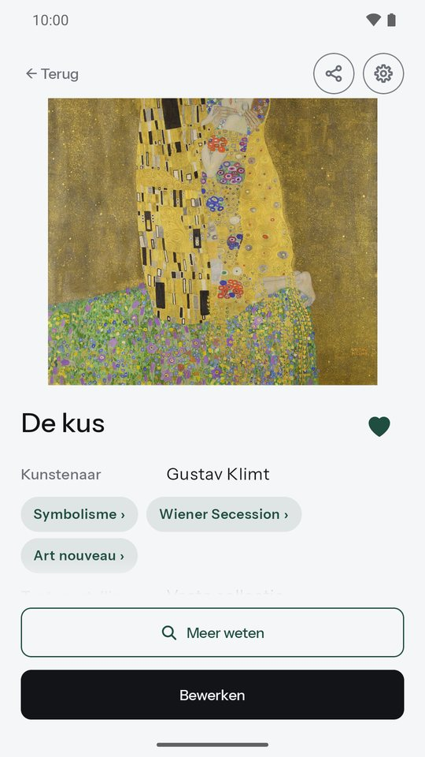
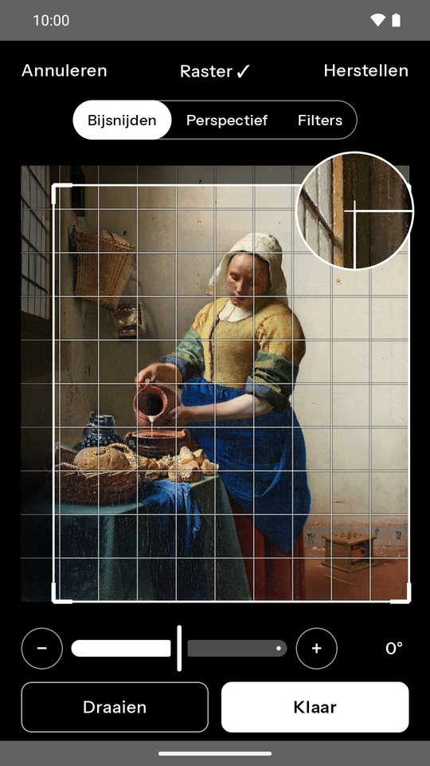
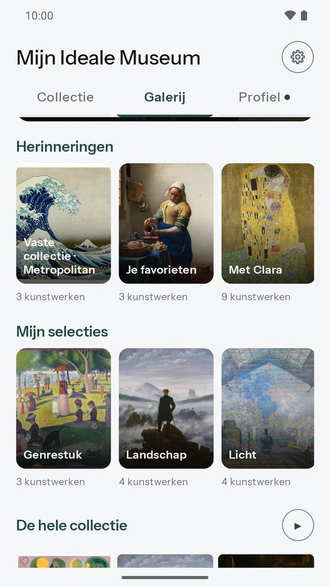
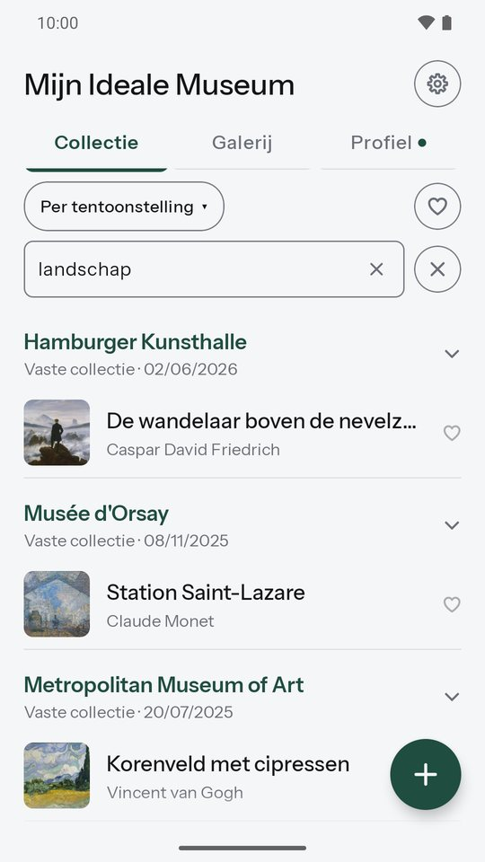
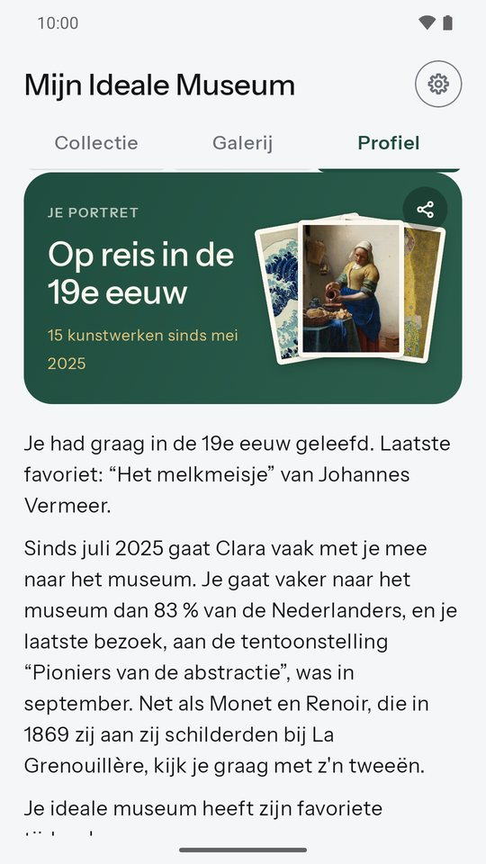
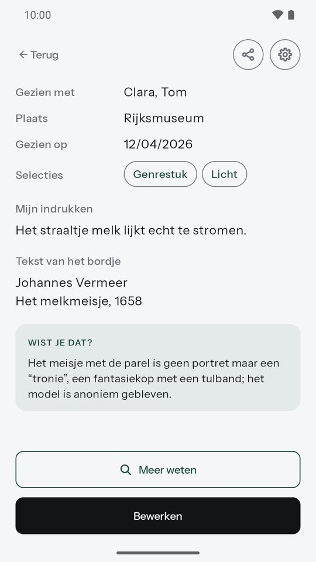
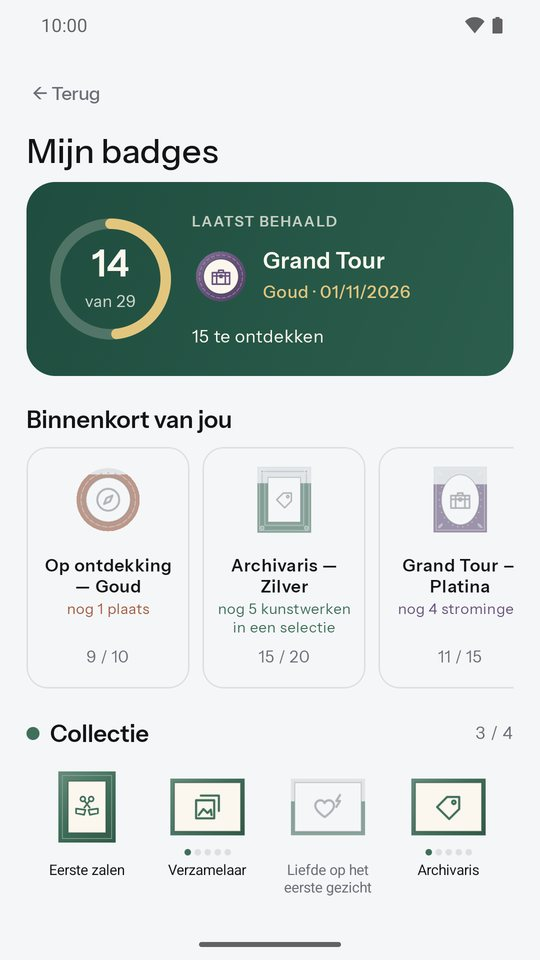
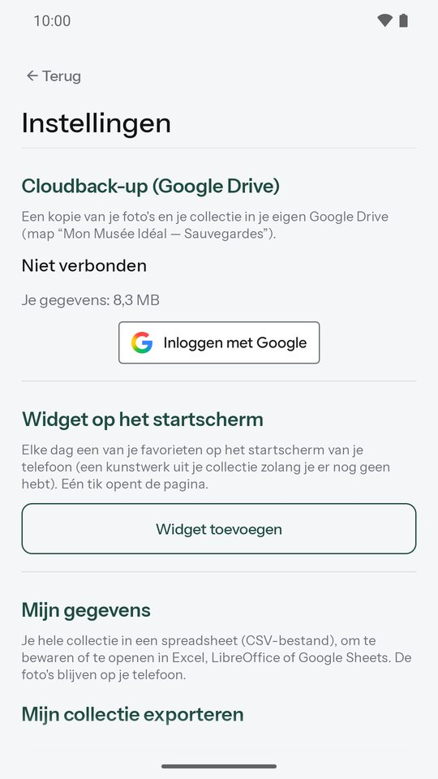

Mijn Ideale Museum
Bewaar de kunstwerken die je raakten.
Raakte een kunstwerk je op een tentoonstelling? Maak een foto, noteer wat het bij je oproept en vind het terug wanneer je wilt. Mijn Ideale Museum is je persoonlijke museumschrift: eenvoudig en zonder account.
Binnenkort op Google PlayGratis Android-app · in zes talen

Alles wat je nodig hebt, niets meer
Een kunstwerk toevoegen in een paar seconden
Fotografeer het kunstwerk of importeer het uit je galerij. Scan het bordje, ter plekke of vanaf een foto: de app leest de tekst en stelt de kunstenaar en de titel voor, gewoon op je telefoon. De naam van de kunstenaar wordt voorgesteld terwijl je typt en typfouten worden herkend; voor de titel, zijn beroemde werken. Een onbekend kunstwerk? “Kunstwerk herkennen” vindt het met Google Lens. Tentoonstelling, plaats, datum en gezelschap gaan mee van kunstwerk naar kunstwerk. 's Avonds voeg je al je foto's tegelijk toe: één kunstwerk per foto, met de datum van de foto's.

Je favorieten, met één tik
Tik op het hartje van een kunstwerk, in de lijst of op de pagina, en het hoort bij je favorieten. Naast de zoekknop toont een filter alleen hen, nog steeds op tentoonstelling, datum, plaats of kunstenaar. Je ideale museum in één oogopslag.
Bewaar wat voor jou telt
Je indrukken, de tekst van het bordje, je eigen selecties zoals “Nog eens zien”. Meerdere foto's per kunstwerk, makkelijk bij te snijden of te draaien, en je favoriete museum als voorstel. Een widget toont elke dag een kunstwerk uit je collectie op je beginscherm.

Museumfoto's, bewerkt
Foto's in het museum zijn vaak scheef of slecht belicht. Snijd nauwkeurig bij met het vergrootglas, zet het perspectief recht en laat “Museum-auto” het licht van de zalen corrigeren. De oude foto wordt pas vervangen als je de bewerking bevestigt.

Je galerij
Al je kunstwerken groot, zoals aan de muren van een museum: elke dag een werk van de dag, herinneringen die voor je zijn samengesteld (je favorieten, je favoriete kunstenaar, je stromingen, je bezoeken met een dierbare…), je eigen selecties, gemaakt met lang indrukken, en een diavoorstelling om ze te laten zien.

Alles snel terugvinden
Je collectie gesorteerd op tentoonstelling, datum, plaats of kunstenaar, en zoeken in al je teksten: titel, kunstenaar, tentoonstelling, plaats, indrukken, bordje. Inklapbare secties en lang indrukken om een hele tentoonstelling of meerdere kunstwerken tegelijk te bewerken.

Je kunstportret
Het Profiel tekent je portret, dat meegroeit met je bezoeken: je favoriete kunstenaar, je favoriete museum, je museummaatje, hoe vaak je naar het museum gaat vergeleken met het Nederlandse gemiddelde, en je kunstwerken per kunstenaar, stroming, tijdperk en plaats. Tik op een stroming om de geschiedenis ervan en je kunstwerken te ontdekken. Deel je portret als afbeelding, zonder de namen van je gezelschap.

Wist je dat?
Meer dan 900 gecontroleerde anekdotes over kunstenaars en musea: op de pagina's van je kunstwerken, in je portret en elke dag bovenaan je collectie. Plus meer dan 240 stromingen, in een paar regels voorgesteld. Het straaltje melk van “Het melkmeisje”, de duiven van Picasso in Barcelona…

Badges om te verzamelen
Grand Tour, Vier seizoenen, Museumnacht, Alleskunner… 29 badges om te verdienen tijdens je bezoeken, als kleine schilderijen waarvan de lijst rijker wordt van brons tot diamant, elk met een anekdote uit de kunstgeschiedenis. Ze zijn allemaal vooraf te zien, en je volgende doelen tonen welke binnen bereik zijn.

Je gegevens blijven van jou
Alles blijft op je telefoon. Geen account, geen advertenties. Als je wilt, een back-up in je eigen Google Drive, met herstel op een nieuwe telefoon; je kunt hem in de app verwijderen. En je hele collectie kun je exporteren naar een spreadsheet.

In één oogopslag
Je privacy eerst
- Geen account nodig: we weten niet wie je bent.
- Je foto's en notities blijven op je telefoon, nooit op onze servers.
- Geen advertenties, geen verkoop van gegevens.
- Het bordje wordt op je telefoon gelezen.
Een vraag, een idee?
Schrijf ons: artory.app@gmail.com